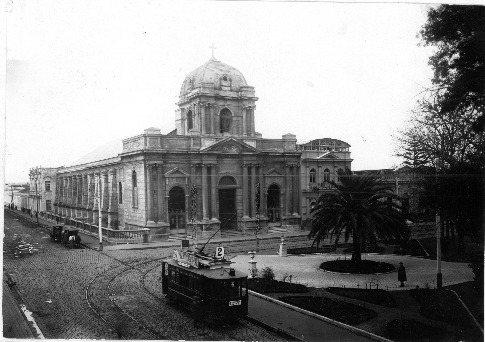
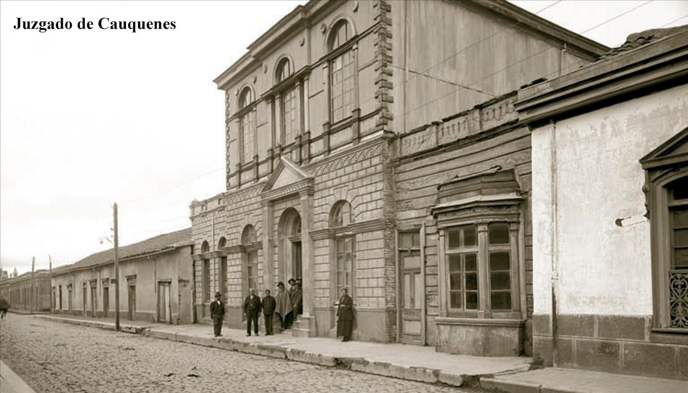
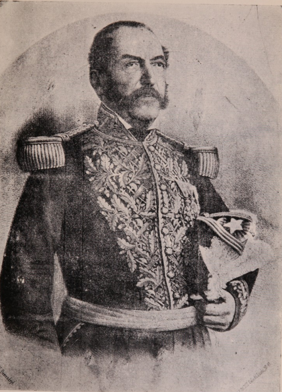
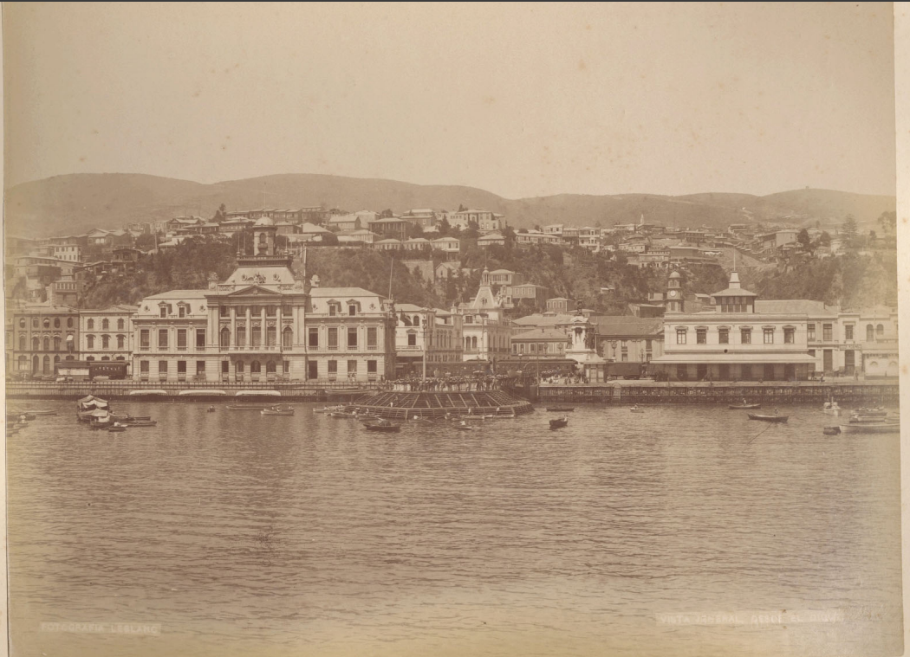

Alexandre Retamal
Como todas las historias familiares, la de Alexandre Retamal se inscribe en varios siglos de vicisitudes, migraciones y encuentros. Desplazamientos de población entre Europa y América del Sur, dirían los historiadores. Aventuras, preferirían decir los soñadores. Españoles que huyen de la Inquisición o parten al descubrimiento del Nuevo Mundo, franceses e italianos que abrazan las promesas del siglo XIX. Las razones cambian, los hombres también. El movimiento permanece.
Alonso García de Retamal, que obtiene el reconocimiento judicial de su nobleza en 1586, en primer lugar. Después, Giuseppe Rondizzoni, joven oficial de los ejércitos napoleónicos. Ambos cruzan el Atlántico y pisan las tierras del imperio español de ultramar. El primero deja allí descendencia. El segundo participa, dos siglos más tarde, en las guerras de independencia del continente americano y acaba convirtiéndose en general.
Tendremos ocasión de ver que aquel mundo no tenía nada de nuevo y que la independencia se parecía, a veces, a otra conquista.
Dos siglos separan a estos hombres. Sin embargo, tienen en común haber abandonado su tierra natal y no haber temido lo desconocido.
Alexandre Retamal emprende el viaje inverso gracias al golpe de Estado de Pinochet. Gracias, sí. Porque sin aquel funesto episodio de la historia chilena, su existencia habría seguido otro rumbo. Hoy viviría en otra realidad.
Pero la historia no conoce el condicional. Solo conserva lo que sucede.
Volvamos, pues, a aquel noble español del Renacimiento que, después de verse obligado a defender su título ante la justicia, se encuentra en la necesidad de reconsiderar su futuro. Entre los soldados, navegantes, administradores, religiosos y artesanos que embarcan rumbo a las posesiones españolas, algunos buscan fortuna. Otros huyen de su pasado. Unos esperan conquistar un territorio; otros, simplemente encontrar refugio.
¿Qué ocurre con Alonso García de Retamal?
¿Huye de la Inquisición o persigue una ambición más prosaica? ¿Marrano o conquistador? Nadie puede determinarlo con certeza. El propio apellido Retamal alimenta el misterio. Procedería de rethem, «árbol de las escobas» en hebreo, la retama en español. Encontramos una referencia a él en el primer Libro de los Reyes:
«Él, por su parte, se adentró en el desierto y, después de una jornada de camino, se sentó bajo una retama (rethem) y pidió la muerte, diciendo: ¡Basta ya! Ahora, Señor, quítame la vida, porque no soy mejor que mis padres. Se acostó y se quedó dormido bajo una retama (rethem). Entonces un ángel lo tocó y le dijo: Levántate y come». (1 Reyes 19, 4-5)
Los nombres, como los hombres, viajan. Cambian de lengua y terminan ocultando los orígenes que parecían destinados a preservar.
Sea como fuere, algunas mujeres de esta familia tendrán descendencia con habitantes originarios de aquellas tierras. Este episodio de la historia familiar fue documentado por Julio Gastón Retamal Favereau (1933-2025), historiador, genealogista y, entre otras funciones, director del Instituto de Historia de la Pontificia Universidad Católica de Chile.
Indígenas. Mapuches, araucanos. La sangre de los cabellos eternamente negros y de la piel imberbe penetra en el linaje.


En aquella época, llegar a América es una empresa larga e incierta. La travesía del Atlántico no es más que el preludio de un segundo viaje a través de territorios inmensos, hasta regiones que se adentran profundamente en el continente.
Chile ocupa entonces una posición periférica dentro del Imperio español. Su lejanía de los principales centros administrativos y comerciales, la dificultad de las comunicaciones y los conflictos vinculados a la conquista colonial hacen que establecerse allí resulte especialmente complejo.
Alonso García de Retamal pertenece a esa generación de migrantes que abandonan el Viejo Mundo para participar en la formación de una sociedad nueva y mestiza.
La historia ha contado ampliamente la conquista. Las batallas, las masacres, los conquistadores y los vencidos. Se ha detenido menos en lo que vino después. En aquellos siglos durante los cuales los pueblos se encontraron, se enfrentaron y se mezclaron, hasta dar nacimiento a sociedades que ya no eran del todo europeas, sin haber permanecido exclusivamente indígenas.
El historiador mexicano Juan Miguel Zunzunegui se interesa precisamente por esta historia. Ya no solo por lo que conquistaron los españoles, sino por lo que se construyó después de su llegada. Ciudades, instituciones, lenguas y culturas nuevas. Una sociedad mestiza, nacida tanto de las alianzas como de los enfrentamientos, tanto de los intercambios como de las dominaciones.
Las rivalidades entre las potencias europeas también dejaron su huella en esta historia. La España católica, enfrentada especialmente a las potencias protestantes, se convierte en objeto de una propaganda política y religiosa cuyas representaciones atravesarán los siglos.
En Imperiofobia y leyenda negra (2016), María Elvira Roca Barea examina esta construcción historiográfica y sostiene que la imagen del Imperio español sigue profundamente marcada por los relatos elaborados en su contra.
Estas interpretaciones son objeto de debate, pero invitan a plantear una pregunta que trasciende la historia española: ¿qué queda de la realidad de los pueblos cuando su pasado es narrado a través de las rivalidades de los imperios?
Yo mismo soy la prueba viviente de esta mezcla. Españoles, italianos, franceses e indígenas. No se trata de negar las violencias de la conquista ni las destrucciones que provocó. Se trata de no reducir varios siglos de historia humana únicamente a esas violencias.
Alonso fue uno de quienes participaron en esta historia. Y su nombre no deja de recordar al de Quijano, Quixano o Quichano. Pero esa es otra historia.
En el siglo XVII, la familia está establecida en la región de Chillán, ciudad fundada en 1580, en el corazón de territorios disputados. La región conoce una historia agitada, marcada por los enfrentamientos entre las fuerzas coloniales y las poblaciones mapuches, que resisten durante largo tiempo la expansión española.
En 1655, un importante levantamiento provoca la destrucción de varios asentamientos coloniales, entre ellos Chillán. La familia debe desplazarse hacia el centro de Chile. Sus ramas se multiplican y echan raíces en otros lugares.
Durante la refundación de Chillán, en 1664, Bartolomé Retamal Bermúdez aparece entre los protagonistas históricos, con el grado de alférez.

Hacia 1675, Alonso Retamal Pérez aparece vinculado a la adquisición de tierras en los sectores de Diño y Comillaún, cerca de Perquilauquén. Este establecimiento marca uno de los puntos de partida del arraigo territorial de la familia en la región del Maule.
Durante los siglos XVIII y XIX, varias ramas de la familia Retamal se desarrollan alrededor de Cauquenes, Llollehue, Itata, Reloca y Chanco. Las generaciones se suceden. Las propiedades se transmiten, las haciendas se fragmentan con las herencias. Los orígenes europeos se alejan progresivamente, hasta convertirse en poco más que un recuerdo conservado por algunos nombres y archivos.

Mientras tanto, al otro lado del Atlántico, otra existencia se prepara.
Giuseppe Rondizzoni Cánepa nace el 14 de mayo de 1788 en la región de Parma, en una Europa profundamente transformada por la Revolución francesa y el ascenso de Napoleón Bonaparte.

En 1807, se incorpora a la Guardia Imperial francesa. Participa en las campañas de España, Austria, Rusia y Alemania. Asciende en el escalafón militar, llega a capitán y recibe la Legión de Honor.
Después llega Waterloo.
En junio de 1815, la derrota de Napoleón y la caída del Primer Imperio ponen fin a esta primera carrera militar. Como tantos hombres cuya existencia se había confundido con la del Imperio, Rondizzoni debe encontrar ahora otro destino.
Decide abandonar Europa.
Su viaje lo conduce a Estados Unidos, donde conoce al general José Miguel Carrera, comprometido en la lucha por la independencia de Chile. En diciembre de 1816, embarca con él rumbo a Buenos Aires. Al año siguiente comienza su segunda carrera militar.
Rondizzoni participa en varias campañas de la guerra de independencia de Chile, especialmente en las operaciones de Talcahuano y en la batalla de Cancha Rayada, en marzo de 1818. Allí se distingue al organizar la retirada de su unidad, contribuyendo a preservar parte de las fuerzas patriotas después de su derrota.
Posteriormente participa en las campañas del Perú y de Chiloé. Se convierte en gobernador de Constitución y después de Talcahuano. En 1854, es ascendido al grado de general de brigada.
El antiguo oficial de Napoleón ha cruzado un océano para continuar una guerra que, bajo otras banderas, involucra a los mismos hombres en las mismas empresas de conquista y poder.
Muere en Valparaíso el 24 de mayo de 1866.

Una de sus hijas, Evarista Rondizzoni Pinto, se casa el 15 de noviembre de 1868 con Jean Bernard Chanfreau Cassé, un francés procedente de Haute-Garonne.
Nacido el 9 de febrero de 1841 en Pointis-Inard, al pie de los Pirineos, Jean Bernard Chanfreau había abandonado su país para establecerse en América del Sur, atraído por las posibilidades comerciales y agrícolas que ofrecían las jóvenes repúblicas.
Las circunstancias precisas de su viaje están poco documentadas. Su historia reaparece en Valparaíso, con ocasión de su matrimonio con Evarista, en uno de los principales puertos del Pacífico sur.
La ciudad es entonces un lugar de paso y encuentro. Marineros, viajeros, comerciantes y empresarios llegados de Europa se cruzan allí, impulsados por los intercambios que conectan los continentes.
Hasta la apertura del canal de Panamá, en 1914, Valparaíso ocupa un lugar central en las rutas marítimas que unen el Atlántico con el Pacífico a través del cabo de Hornos.
Jean Bernard Chanfreau muere allí el 30 de julio de 1907.
Su descendencia, ya chilena, se une a las generaciones procedentes de otras migraciones europeas. Las familias se enlazan, los apellidos se transmiten. Las lenguas y las nacionalidades se mezclan. Lo que un día fue tierra de exilio se convierte, para las generaciones siguientes, en patria.
De esta larga historia nace Alexandre Retamal.
El 30 de enero de 1972, en Santiago de Chile, Luis Retamal y Denise Chanfreau tienen un hijo.
El país está entonces gobernado por Salvador Allende, elegido presidente de la República en 1970.
Para comprender el Chile en el que nace Alexandre, hay que remontarse algunas décadas.
A mediados del siglo XX, la colonización cambia de naturaleza. Puede volverse menos visible y adoptar otras vías distintas de la ocupación militar: las finanzas, las instituciones económicas y la influencia política.
Chile es una república independiente desde hace más de un siglo. Pero su autonomía política no lo protege de las ambiciones económicas de las potencias extranjeras.
A partir de 1955, el país experimenta un giro importante en su historia económica, marcado por la creciente influencia de los círculos financieros estadounidenses sobre las políticas nacionales.
Aquel año, ante una inflación galopante, el gobierno de Carlos Ibáñez del Campo recurre a la misión Klein-Saks, un grupo de expertos económicos estadounidenses estrechamente vinculados a las instituciones bancarias y financieras de Estados Unidos.
Encargada de combatir la inflación, la misión elabora un programa de reestructuración económica que recomienda reducir el gasto público, liberalizar los mercados, abrir la economía al capital extranjero y limitar la intervención del Estado.
Ya no se trata de ocupar un territorio, sino de influir en las decisiones de quienes lo gobiernan.
Paralelamente, Estados Unidos apoya un programa de cooperación entre la Universidad Católica de Chile y la Universidad de Chicago. Esta iniciativa contribuye a la formación de los futuros «Chicago Boys», economistas chilenos que desempeñarán un papel central en las reformas económicas de la dictadura militar.
La influencia extranjera pasa ahora por los capitales, pero también por la formación intelectual de quienes estarán llamados a definir las políticas económicas nacionales.
En 1970, la elección de Salvador Allende rompe esta trayectoria.
Su programa de nacionalizaciones y reformas sociales pretende devolver al Estado chileno un mayor control sobre sus recursos y su desarrollo económico.
La administración de Richard Nixon emprende entonces operaciones clandestinas para impedir su llegada al poder y, posteriormente, para desestabilizar su gobierno.
Los documentos desclasificados de la CIA y del gobierno estadounidense revelarán la existencia de estrategias de intervención política, presiones económicas y apoyo financiero a distintos sectores de la oposición chilena.

Mientras tanto, economistas chilenos elaboran un programa de reestructuración conocido como El Ladrillo, destinado a reorientar profundamente la economía del país hacia el libre mercado.
El 11 de septiembre de 1973, un golpe de Estado militar derroca a Salvador Allende.
Augusto Pinochet toma el poder.
La dictadura emprende una transformación radical de la economía chilena, apoyándose en los principios defendidos por los economistas formados en Chicago. Las empresas públicas son privatizadas progresivamente, se amplían los mecanismos del mercado y se redefine profundamente el papel económico del Estado.
Esta reestructuración va acompañada de una represión sistemática de los opositores.
La violencia política y la transformación económica no constituyen dos historias independientes. Se desarrollan bajo un mismo régimen, en un país donde toda oposición organizada queda expuesta a la persecución.
Alfonso Chanfreau, nacido en 1950, es entonces estudiante de filosofía en la Universidad de Chile y dirigente del Comité Central del Movimiento de Izquierda Revolucionaria, el MIR.
Después del golpe de Estado, continúa sus actividades políticas en la clandestinidad, mientras la represión se intensifica.
Su compromiso y los riesgos a los que se exponen los familiares de los militantes llevan a la familia a considerar el exilio.
Ha conservado la nacionalidad francesa transmitida por Jean Bernard Chanfreau, aquel hombre que había abandonado los Pirineos más de un siglo antes. La nacionalidad heredada del antepasado se convierte en una posibilidad de refugio.
En septiembre de 1974, Alexandre Retamal llega a Sarcelles, en la periferia norte de París.
El viaje que había llevado a sus antepasados hacia América continúa ahora en sentido inverso. Pero las circunstancias han cambiado. Ya no se trata de buscar fortuna ni de descubrir nuevos horizontes. Hay que huir.
En Chile, la represión continúa.
El 30 de julio de 1974, Alfonso Chanfreau es detenido en su domicilio por agentes de la Dirección de Inteligencia Nacional, la DINA, policía política del régimen militar.
Detenido y torturado en el centro clandestino de Londres 38, en Santiago, desaparece después de ser trasladado fuera de aquel centro, el 13 de agosto de 1974. Tiene veintitrés años. Su destino sigue siendo desconocido.
Habrá que esperar hasta el 8 de diciembre de 2010 y la apertura del juicio ante el Tribunal de lo Penal de París para que una luz, todavía tenue, se proyecte sobre su desaparición.
Catorce antiguos responsables de la represión chilena son juzgados en rebeldía hasta el 17 de diciembre por su implicación en las detenciones, secuestros, torturas y desapariciones de cuatro ciudadanos franceses: Georges Klein, Étienne Pesle, Jean-Yves Claudet y Alfonso Chanfreau.
Los dos principales responsables de la DINA, Manuel Contreras y Pedro Espinoza, son condenados a cadena perpetua. Otros once reciben penas de entre quince y treinta años de prisión.
Treinta y seis años separan la desaparición de Alfonso del juicio. Treinta y seis años durante los cuales la ausencia permanece.
En Sarcelles, Alexandre crece en un entorno muy diferente del que conocieron sus antepasados.
Desde la década de 1950, la construcción de grandes conjuntos residenciales ha transformado profundamente el paisaje de este municipio del norte de París, convertido en uno de los símbolos de la urbanización de las periferias francesas durante los llamados Treinta Gloriosos.
En los años setenta, la ciudad acoge a poblaciones procedentes de distintas regiones francesas y de numerosos países extranjeros. Los orígenes se entrecruzan en los edificios, las escuelas y las calles.
Los grandes conjuntos residenciales conviven todavía con solares y huertos abandonados, vestigios de un paisaje rural que la urbanización no ha borrado por completo.
Es en este entorno multicultural donde Alexandre pasa su infancia, entre las cabañas en los árboles, el hip-hop llegado de Estados Unidos y las nuevas tecnologías.
La calculadora Casio FX-8500G lo fascina. La utiliza para escribir, como si fuera un ordenador portátil.
En febrero de 1991, Alexandre Retamal es incorporado al 1.er Regimiento de Coraceros, destinado en Saint-Wendel, en el Sarre, al oeste de Alemania.
Es asignado al primer pelotón del primer escuadrón, dentro de esta unidad de caballería blindada del ejército francés.
Su servicio militar coincide con un contexto internacional especialmente tenso. Tras la invasión de Kuwait por Irak, en agosto de 1990, una coalición internacional liderada por Estados Unidos emprende una intervención militar en la que Francia participa mediante la operación Daguet.
Alexandre considera entonces la posibilidad de unirse a las fuerzas desplegadas en la región para vigilar las fronteras. La propuesta resulta económicamente atractiva. A una paga considerablemente aumentada se suman numerosas primas, que representan para un joven recluta una auténtica fortuna.
Pero la promesa hecha a su abuelo paterno lo disuade: la de no ir a la guerra.
De regreso a Villiers-le-Bel, se une a Mustapha Nasri en la asociación Créateurs Actifs, cuyo objetivo es acompañar a jóvenes creadores procedentes de los barrios populares y facilitarles el acceso a los medios técnicos, materiales y financieros necesarios para realizar sus proyectos.
La iniciativa es innovadora. No se trata únicamente de fomentar la creación artística, sino de proporcionar a quienes tienen ideas y capacidad para llevarlas a cabo los medios necesarios para construir su propia actividad profesional.
Alexandre participa en esta iniciativa diseñando la identidad visual de la asociación, especialmente su logotipo. Realiza carteles, materiales gráficos y folletos de comunicación. También contribuye a la búsqueda de financiación para los proyectos acompañados.
En este contexto, diseña el cartel Protégeons-nous ! («¡Protejámonos!»), destinado a una campaña de prevención del VIH para la Agencia Francesa de Lucha contra el Sida.
Curiosamente, este cartel se conserva hoy en las colecciones de la Wellcome Collection, en Londres.
La originalidad de Créateurs Actifs atrae la atención de los medios de comunicación.
En 1996, la asociación comienza a desintegrarse.
Alexandre Retamal se matricula entonces en Derecho en la Universidad París X-Nanterre, siguiendo el consejo de su coronel, quien le había dicho durante una revista de tropas:
—¡Retamal, usted ha nacido para ser abogado! ¡Vaya a la universidad y deje de hacer el idiota!
Se convertirá en abogado en 2001.